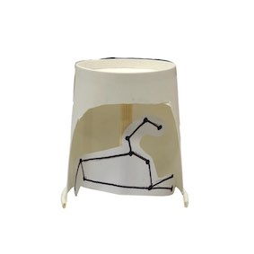

商品概要
毎日寝る前に部屋の電灯を消して横になった時星が見えるように星座が輝いてたら照明を見て心の安定
作業進捗
材料 - 紙コップ、箸一本、良い香りも出たらいいなと思っている。ちょっと厚い紙、ペン、ハサミ、テープ
時間 - 10分〜15分
透明な丸い筒に星座を描いて入れたかったが透明材料が何もなくて紙コップ取り替えって作った。
中が見えるように作りたかったので紙コップの前の部分を切った。
ちょっと厚い紙に私の星座である獅子座を描いた。(これは人それぞれ違うからオーダーメードだ)
箸一本を紙コップの長さに合わせて切った。獅子座の絵を切っておいた箸に貼った。
IMAGE

アドバイス
良い香りも出たらいいなと思っている。